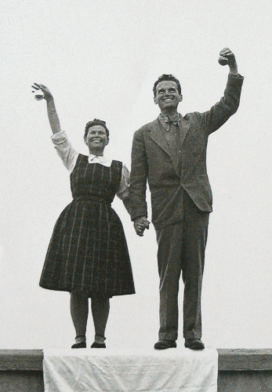

Charles and Ray Eames
“Eventually everything connects—people, ideas, objects…the quality of the connections is the key to quality per se…I don’t believe in this ‘gifted few’ concept, just in people doing things they are really interested in doing. They have a way of getting good at whatever it is.”
— Charles Eames
Biography

Charles and Ray Eames are among the most important American designers of this century. They are best known for their groundbreaking contributions to architecture, furniture design (e.g., the Eames Chair), industrial design and manufacturing, and the photographic arts.
Charles Eames was born in 1907 in St. Louis, Missouri. He attended school there and developed an interest in engineering and architecture. After attending Washington University on scholarship for two years and being thrown out for his advocacy of Frank Lloyd Wright, he began working in an architectural office. In 1929, he married his first wife, Catherine Woermann (they divorced in 1941), and a year later Charles’ only child, daughter Lucia was born. In 1930, Charles started his own architectural office. He began extending his design ideas beyond architecture and received a fellowship to Cranbrook Academy of Art in Michigan, where he eventually became head of the design department.
Ray Kaiser Eames was born in Sacramento, California in the middle of the century’s second decade. She studied painting with Hans Hofmann in New York before moving on to Cranbrook Academy where she met and assisted Charles and Eero Saarinen in preparing designs for the Museum of Modern Art’s “Organic Furniture Competition.” Charles and Eero’s designs, created by molding plywood into complex curves, won them the two first prizes.
Charles and Ray married in 1941 and moved to California where they continued their furniture design work with molding plywood. During the war they were commissioned by the Navy to produce molded plywood splints, stretchers and experimental glider shells. In 1946, Evans Products began producing the Eameses’ molded plywood furniture. Their molded plywood chair was called “the chair of the century” by the influential architectural critic Esther McCoy. Soon production was taken over by Herman Miller, Inc., who continues to produce the furniture in the United States to this day. Another company, Vitra International, manufactures the furniture in Europe. In 1949, Charles and Ray designed and built their own home in Pacific Palisades, California as part of the Case Study House Program sponsored by Arts and Architecture Magazine. Their design and innovative use of materials made this house a mecca for architects and designers from all over the world. It is considered one of the most important post-war residences built anywhere in the world.